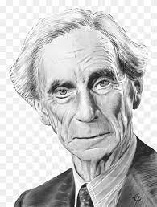

.jpeg)
T,s Eloit
T,s Eloit
- In the video above listen to Eliot read his second-most famous work, “The Love Song of J. Alfred Prufrock,” with the text of the poem choreographed by Wordookie, an open-source version of Wordle. “Prufrock,” first published in 1915, is as dense with literary allusions as “The Waste Land” (and thus as painful for the average undergraduate).
- You can find these poems catalogued in our collection of 700 Free Audio Books and 800 Free eBooks.
- If you would like to support the mission of Open Culture, consider making a donation to our site.
.jpeg)
Richard Feynman
Richard feynman
- Richard Phillips Feynman (/ˈfaɪnmən/; May 11, 1918 – February 15, 1988) was an American theoretical physicist, known for his work in the path integral formulation of quantum mechanics, the theory of quantum electrodynamics, the physics of the superfluidity of supercooled liquid helium, as well as his work in particle physics for which he proposed the parton model.
- Feynman developed a widely used pictorial representation scheme for the mathematical expressions describing the behavior of subatomic particles, which later became known as Feynman diagrams.
- He assisted in the development of the atomic bomb during World War II and became known to a wide public in the 1980s as a member of the Rogers Commission, the panel that investigated the Space Shuttle Challenger disaster.
.jpeg)
Charles Seymour
Charles Seymour
- Seymour was born in New Haven, Connecticut, the son of Thomas Day Seymour, who taught classics at Yale, and Sarah Hitchcock Seymour.
- Seymour, was the great-great grandson of Thomas Clap, who was President of Yale in the 1740s.
- Seymour was awarded a Bachelor of Arts at King's College, Cambridge in 1904; and he earned a second BA from Yale in 1908.

Bertrand Russel
.jpeg)
William faulkner
William faulner
- William Faulkner (1897-1962), who came from an old southern family, grew up in Oxford, Mississippi.
- In 1940, Faulkner published the first volume of the Snopes trilogy, The Hamlet, to be followed by two volumes, The Town (1957) and The Mansion (1959), all of them tracing the rise of the insidious Snopes family to positions of power and wealth in the community.
- William Faulkner died on July 6, 1962.
.jpeg)
Maria Vargas Llosa
Mario Vargas Llosa
- Mario Vargas Llosa was born in 1936 in Arequipa, Peru’s second largest city.
- Another fundamental experience in his life was a journey he made in the Amazon jungle in 1958, which inspired novels such as The Green House (1966), Captain Pantoja and the Special Service (1973), The Storyteller (1987) and The Dream of the Celt (2010).
- Since 1990 Vargas Llosa has published a fortnightly column in the Spanish daily newspaper El País, which is reprinted in different media sources all over the world.
.jpeg)
.jpeg)
.jpeg)